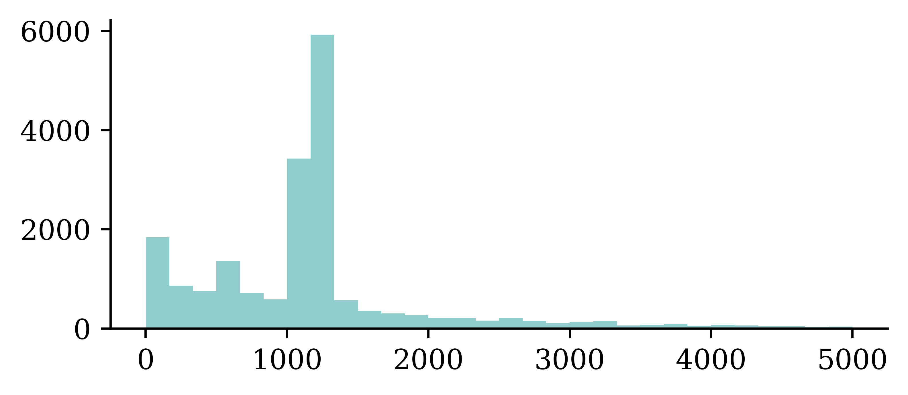
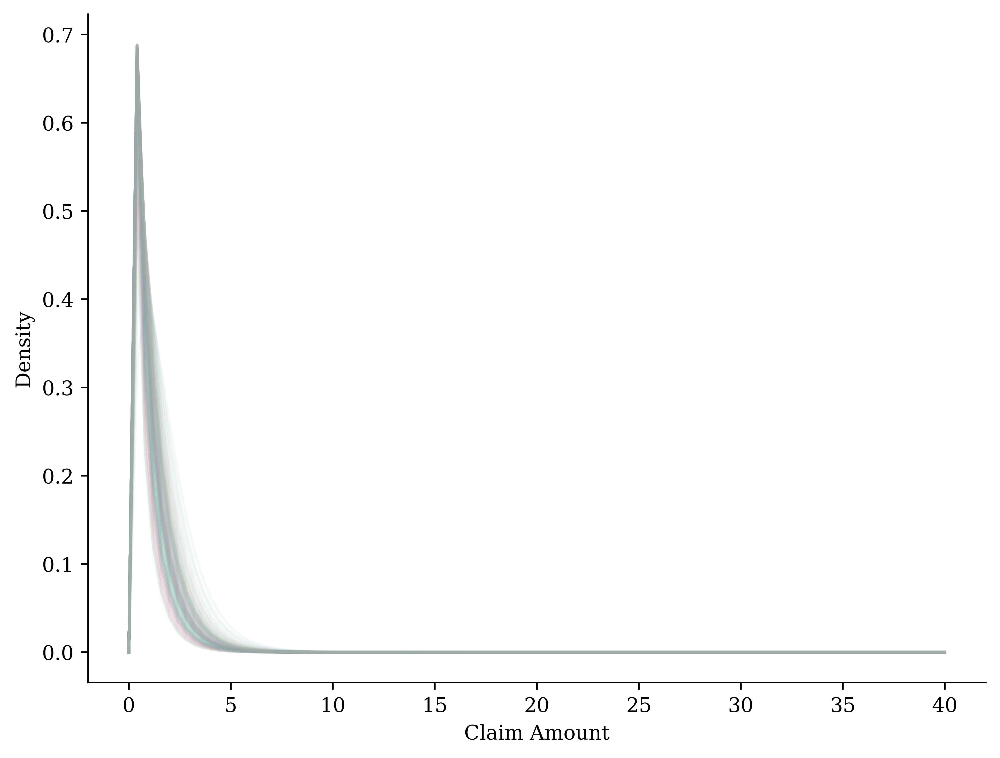

Question: If you decide to predict the claim amount of Bob using a deep learning model, which source(s) of uncertainty are you confronting?
The inherent variability of the data-generating process.
Parameter error.
Model error.
Data uncertainty.
All of the above.
Answer
All of the above!
There are two major types of uncertainty in statistical or machine learning:
Aleatoric uncertainty
Epistemic uncertainty
Since there is no consensus on the definitions of aleatoric and epistemic uncertainty, we provide the most acknowledged definitions in the following slides.
Aleatoric Uncertainty
Qualitative Definition
Aleatoric uncertainty refers to the statistical variability and inherent noise with data distribution that modelling cannot explain.
Quantitative Definition
\[\text{Ale}(Y|\boldsymbol{x}) = \mathbb{V}[Y|\boldsymbol{x}],\]i.e., if \(Y|\boldsymbol{x} \sim \mathcal{N}(\mu, \sigma^2)\), the aleatoric uncertainty would be \(\sigma^2\). Simply, it is the conditional variance of the response variable \(Y\) given features/covariates \(\boldsymbol{x}\).
Epistemic Uncertainty
Qualitative Definition
Epistemic uncertainty refers to the lack of knowledge, limited data information, parameter errors and model errors.
\(\texttt{Area=0}\) represents the rural area, and \(\texttt{Area=5}\) represents the urban center.
Histogram of the ClaimAmount
plt.hist(y_train[y_train <5000], bins=30);

Aleatoric Uncertainty
GLM
The generalised linear model (GLM) is a statistical regression model that estimates the conditional mean of the response variable \(Y\) given an instance \(\boldsymbol{x}\) via a link function \(g\): \[
\mathbb{E}[Y|\boldsymbol{x}]
= \mu(\boldsymbol{x}; \boldsymbol{\beta}_{\text{GLM}})
= g^{-1} \big(\big \langle \boldsymbol{\beta}_{\text{GLM}}, \boldsymbol{x} \big \rangle\big),
\] where
\(\boldsymbol{x} \in \mathbb{R}^{d_{\boldsymbol{x}}}\) is the vector of explanatory variables, with \(d_{\boldsymbol{x}}\) denoting its dimension.
\(\boldsymbol{\beta}_{\text{GLM}}\) represents the vector of regression coefficients.
\(\langle \boldsymbol{a}, \boldsymbol{b}\rangle\) represents the inner product of \(\boldsymbol{a}\) and \(\boldsymbol{b}\).
Then, it estimates the conditional mean of \(Y\) given a new instance \(\boldsymbol{x}=(1, x_1, x_2, x_3)\) as follows: \[
\mathbb{E}[Y|\boldsymbol{x}]=g^{-1}(\langle \boldsymbol{\beta}_{\text{GLM}}, \boldsymbol{x}\rangle)=\exp\big(\beta_0+ \beta_1x_1+\beta_2x_2+\beta_3x_3\big).
\]
A GLM can model any other exponential family distribution using an appropriate link function \(g\).
“Loss Function” for a Gamma GLM
If \(Y|\boldsymbol{x}\) is a gamma r.v., we can parameterise its density by its mean \(\mu(\boldsymbol{x}; \boldsymbol{\beta})\) and dispersion parameter \(\phi\): \[
f_{Y|\boldsymbol{X}}(y|\boldsymbol{x}, \boldsymbol{\beta}, \phi)
= \frac{(\mu (\boldsymbol{x}; \boldsymbol{\beta})\cdot \phi)^{-1/\phi}}{{\Gamma(1/\phi)}} \cdot y^{1/\phi - 1} \cdot \mathrm{e}^{-y/(\mu (\boldsymbol{x}; \boldsymbol{\beta})\cdot\phi)}.
\] The “loss function” for a gamma GLM is typically the negative log-likelihood (NLL): \[
\sum_{i=1}^{N}-\log f_{Y|\boldsymbol{X}}(y_i|\boldsymbol{x}_i, \boldsymbol{\beta},\phi)
\propto \sum_{i=1}^{N}\log \mu (\boldsymbol{x}_i; \boldsymbol{\beta})+\frac{y_i}{\mu (\boldsymbol{x}_i; \boldsymbol{\beta})} + \text{const},
\] i.e., we ignore the dispersion parameter \(\phi\) while estimating the regression coefficients.
Fitting Steps
Step 1. Use the advanced second derivative iterative method to find the regression coefficients: \[
\boldsymbol{\beta}_{\text{GLM}} = \underset{\boldsymbol{\beta}}{\text{arg min}} \ \sum_{i=1}^{N}\log \mu (\boldsymbol{x}_i; \boldsymbol{\beta})+\frac{y_i}{\mu (\boldsymbol{x}_i; \boldsymbol{\beta})}
\]
import statsmodels.api as sm# Add a column of ones to include an intercept in the modelX_train_design = sm.add_constant(X_train)# Create a Gamma GLM with a log link functiongamma_GLM = sm.GLM(y_train, X_train_design, family=sm.families.Gamma(sm.families.links.log()))# Fit the modelgamma_GLM = gamma_GLM.fit()#Dispersion Parametermus = gamma_GLM.predict(X_train_design)residuals = mus-y_trainvariance = mus**2dof = (len(y_train)-X_train.shape[1])phi_GLM = np.sum(residuals**2/variance)/dofprint(phi_GLM)
59.630623235781364
/Users/plaub/anaconda3/envs/ai/lib/python3.10/site-packages/statsmodels/genmod/families/links.py:13: FutureWarning: The log link alias is deprecated. Use Log instead. The log link alias will be removed after the 0.15.0 release.
warnings.warn(
CANN
The Combined Actuarial Neural Network is a novel actuarial neural network architecture proposed by Schelldorfer and Wüthrich (2019). We summarise the CANN approach as follows:
Find the coefficients \(\boldsymbol{\beta}_{\text{GLM}}\) of the GLM with a link function \(g(\cdot)\).
Find the weights \(\boldsymbol{w}_{\text{CANN}}\) of a neural network \(\mathcal{M}_{\text{CANN}}:\mathbb{R}^{d_{\boldsymbol{x}}}\to\mathbb{R}\).
Given a new instance \(\boldsymbol{x}\), we have \[\mathbb{E}[Y|\boldsymbol{x}] = g^{-1}\Big( \langle\boldsymbol{\beta}_{\text{GLM}}, \boldsymbol{x}\rangle + \mathcal{M}_{\text{CANN}}(\boldsymbol{x};\boldsymbol{w}_{\text{CANN}})\Big).\]
Given a finite set of resulting random variables \((Y_1, ..., Y_{K})\), one can generate a multinomial random variable \(Y\sim \text{Multinomial}(1, \boldsymbol{\pi})\). Meanwhile, \(Y\) can be regarded as a mixture of \(Y_1, ..., Y_{K}\), i.e., \[
Y = \begin{cases}
Y_1 & \text{w.p. } \pi_1, \\
\vdots & \vdots\\
Y_K & \text{w.p. } \pi_K, \\
\end{cases}
\] where we define a set of finite set of weights \(\boldsymbol{\pi}=(\pi_{1} ..., \pi_{K})\) such that \(\pi_k \ge 0\) for \(k \in \{1, ..., K\}\) and \(\sum_{k=1}^{K}\pi_k=1\).
Mixture Distribution
Let \(f_{Y_k|\boldsymbol{X}}\) and \(F_{Y_k|\boldsymbol{X}}\) be the probability density function and the cumulative density function, respectively, of \(Y_k|\boldsymbol{X}\) for all \(k\in \{1, ..., K\}\). The random variable \(Y|\boldsymbol{X}\), which mixes \(Y_k|\boldsymbol{X}\)’s with weights \(\pi_k\)’s, has the density function \[
f_{Y|\boldsymbol{X}}(y|\boldsymbol{x}) = \sum_{k=1}^{K}\pi_k(\boldsymbol{x}) f_{k}(y|\boldsymbol{x}),
\] and the cumulative density function \[
F_{Y|\boldsymbol{X}}(y|\boldsymbol{x}) = \sum_{k=1}^{K}\pi_k(\boldsymbol{x}) F_{k}(y|\boldsymbol{x}).
\]
Mixture Density Network
A mixture density network (MDN) \(\mathcal{M}_{\boldsymbol{w}^*}\) outputs each distribution component’s mixing weights and parameters of \(Y\) given the input features \(\boldsymbol{x}\), i.e., \[
\mathcal{M}_{\boldsymbol{w}^*}(\boldsymbol{x})=(\boldsymbol{\pi}(\boldsymbol{x};\boldsymbol{w}^*), \boldsymbol{\theta}(\boldsymbol{x};\boldsymbol{w}^*)),
\] where \(\boldsymbol{w}^*\) is the networks’ weights found by minimising the following negative log-likelihood loss function \[
\mathcal{L}(\mathcal{D}, \boldsymbol{\theta})= - \sum_{i=1}^{N} \log f_{Y|\boldsymbol{x}}(y_i|\boldsymbol{x}, \boldsymbol{w}^*),
\] where \(\mathcal{D}=\{(\boldsymbol{x}_i,y_i)\}_{i=1}^{N}\) is the training dataset.
Mixture Density Network
Figure: An MDN that outputs the parameters for a \(K\) component mixture distribution. \(\boldsymbol{\theta}_k(\boldsymbol{x}; \boldsymbol{w}^*)= (\theta_{k,1}(\boldsymbol{x}; \boldsymbol{w}^*), ..., \theta_{k,|\boldsymbol{\theta}_k|}(\boldsymbol{x}; \boldsymbol{w}^*))\) consists of the parameter estimates for the \(k\)th mixture component.
Model Specification
Suppose there are two types of claims:
Type I: \(Y_1|\boldsymbol{x}\sim \text{Gamma}(\alpha_1(\boldsymbol{x}), \beta_1(\boldsymbol{x}))\) and,
Type II: \(Y_2|\boldsymbol{x}\sim \text{Gamma}(\alpha_2(\boldsymbol{x}), \beta_2(\boldsymbol{x}))\).
The density of the actual claim amount \(Y|\boldsymbol{x}\) follows \[
f_{Y|\boldsymbol{X}}(y|\boldsymbol{x})
=\pi_1(\boldsymbol{x})\cdot \frac{\beta_1(\boldsymbol{x})^{\alpha_1(\boldsymbol{x})}}{\Gamma(\alpha_1(\boldsymbol{x}))}\mathrm{e}^{-\beta_1(\boldsymbol{x})y}y^{\alpha_1(\boldsymbol{x})-1} \\
\quad \quad\quad \quad\quad \quad +
(1-\pi_1(\boldsymbol{x}))\cdot \frac{\beta_2(\boldsymbol{x})^{\alpha_2(\boldsymbol{x})}}{\Gamma(\alpha_2(\boldsymbol{x}))}\mathrm{e}^{-\beta_2(\boldsymbol{x})y}y^{\alpha_2(\boldsymbol{x})-1}.
\] where \(\pi_1(\boldsymbol{x})\) is the probability of a Type I claim given \(\boldsymbol{x}\).
Output
The aim is to find the optimum weights \[
\boldsymbol{w}^* = \underset{w}{\text{arg min}} \ \mathcal{L}(\mathcal{D}, \boldsymbol{w})
\] for the Gamma mixture density network \(\mathcal{M}_{\boldsymbol{w}^*}\) that outputs the mixing weights, shapes and scales of \(Y\) given the input features \(\boldsymbol{x}\), i.e., \[
\mathcal{M}_{\boldsymbol{w}^*}(\boldsymbol{x})=(
\pi_1(\boldsymbol{x}; \boldsymbol{w}^*),
\pi_2(\boldsymbol{x}; \boldsymbol{w}^*), \\
\quad \quad \quad \quad \quad
\alpha_1(\boldsymbol{x}; \boldsymbol{w}^*),
\alpha_2(\boldsymbol{x}; \boldsymbol{w}^*),\\
\quad \quad \quad \quad \quad \quad
\beta_1(\boldsymbol{x}; \boldsymbol{w}^*),
\beta_2(\boldsymbol{x}; \boldsymbol{w}^*)
).
\]
Architecture
Figure: We demonstrate the structure of a gamma MDN that outputs the parameters for a gamma mixture with two components.
Code: Architecture
The following code resembles the architecture of the architecture of the gamma MDN from the previous slide.
# Ensure reproducibilityrandom.seed(1); tf.random.set_seed(1)inputs = Input(shape=X_train.shape[1:])# Two hidden layers x = Dense(64, activation='relu')(inputs)x = Dense(64, activation='relu')(x)pis = Dense(2, activation='softmax')(x) #mixing weightsalphas = Dense(2, activation='exponential')(x) #shape parametersbetas = Dense(2, activation='exponential')(x) #scale parameters#`y_pred` will now have 6 columnsgamma_mdn = Model(inputs, Concatenate(axis=1)([pis, alphas, betas]))
Loss Function
The negative log-likelihood loss function is given by
\[
\mathcal{L}(\mathcal{D}, \boldsymbol{w})
= - \sum_{i=1}^{N} \log \ f_{Y|\boldsymbol{x}}(y_i|\boldsymbol{x}, \boldsymbol{w})
\] where the \(f_{Y|\boldsymbol{x}}(y_i|\boldsymbol{x}, \boldsymbol{w})\) is defined by \[
\begin{align*}
&\pi_1(\boldsymbol{x};\boldsymbol{w})\cdot \frac{\beta_1(\boldsymbol{x};\boldsymbol{w})^{\alpha_1(\boldsymbol{x};\boldsymbol{w})}}{\Gamma(\alpha_1(\boldsymbol{x};\boldsymbol{w}))}\mathrm{e}^{-\beta_1(\boldsymbol{x};\boldsymbol{w})y}y^{\alpha_1(\boldsymbol{x};\boldsymbol{w})-1} \\
& \quad + (1-\pi_1(\boldsymbol{x};\boldsymbol{w}))\cdot \frac{\beta_2(\boldsymbol{x};\boldsymbol{w})^{\alpha_2(\boldsymbol{x};\boldsymbol{w})}}{\Gamma(\alpha_2(\boldsymbol{x};\boldsymbol{w}))}\mathrm{e}^{-\beta_2(\boldsymbol{x};\boldsymbol{w})y}y^{\alpha_2(\boldsymbol{x};\boldsymbol{w})-1}
\end{align*}
\]
Code: Loss Function
We employ functions from tensorflow_probability to code the loss function for the gamma MDN.
import tensorflow_probability as tfptfd = tfp.distributionsK =2# number of mixture componentsdef gamma_mixture_NLL(y_true, y_pred): K = y_pred.shape[1] //3 pis = y_pred[:, :K] alphas = y_pred[:, K:2*K] betas = y_pred[:, 2*K:3*K]# The mixture distribution is a MixtureSameFamily distribution mixture_distribution = tfd.MixtureSameFamily( mixture_distribution=tfd.Categorical(probs=pis), components_distribution=tfd.Gamma(alphas, betas))# The loss is the negative log-likelihood of the datareturn-mixture_distribution.log_prob(y_true)
Code: Model Training
#Employ the loss function from previous slidegamma_mdn.compile(optimizer="adam", loss=gamma_mixture_NLL)hist = gamma_mdn.fit(X_train, y_train, epochs=300, callbacks=[EarlyStopping(patience=30)], verbose=0, batch_size=64, validation_split=0.2)
Proper Scoring Rules
Definition
The scoring rule\(S : \mathcal{F} \times \mathbb{R} \to \bar{\mathbb{R}}\) is proper relative to the class \(\mathcal{F}\) if \[
S(G, G)\le S(F, G)
\] for all \(F,G\in \mathcal{F}\). It is strictly proper if equality holds only if \(F = G\).
Examples:
Logarithmic Score (NLL)
Continuous Ranked Probability Score (CRPS)
Proper Scoring Rules
Logarithmic Score (NLL)
The logarithmic score is defined as \[
\mathrm{LogS}(f, y) = - \log f(y),
\] where \(f\) is the predictive density.
Continuous Ranked Probability Score (CRPS)
The continuous ranked probability score is defined as \[
\mathrm{crps}(F, y) = \int_{-\infty}^{\infty} (F(t) - {1}_{t\ge y})^2 \ \mathrm{d}t,
\] where \(F\) is the cumulative distribution function.
Code: NLL
from scipy.stats import gammadef gamma_nll(mean, dispersion, y):# Calculate shape and scale parameters from mean and dispersion shape =1/ dispersion; scale = mean * dispersion# Create a gamma distribution object gamma_dist = gamma(a=shape, scale=scale)return-np.mean(gamma_dist.logpdf(y))#GLMX_test_design = sm.add_constant(X_test)mus = gamma_GLM.predict(X_test_design)NLL_GLM = gamma_nll(mus, phi_GLM, y_test)#CANNmus = np.exp(np.sum(CANN.predict(X_test, verbose=0), axis =1))NLL_CANN = gamma_nll(mus, phi_CANN, y_test)#MDNNLL_MDN = gamma_mdn.evaluate(X_test, y_test, verbose=0)
It’s surprising at first that this destructive technique works at all. Would a company perform better if its employees were told to toss a coin every morning to decide whether or not to go to work? Well, who knows; perhaps it would! The company would be forced to adapt its organization; it could not rely on any single person to work the coffee machine or perform any other critical tasks, so this expertise would have to be spread across several people. Employees would have to learn to cooperate with many of their coworkers, not just a handful of them.
Dropout quote #2
The company would become much more resilient. If one person quit, it wouldn’t make much of a difference. It’s unclear whether this idea would actually work for companies, but it certainly does for neural networks. Neurons trained with dropout cannot co-adapt with their neighboring neurons; they have to be as useful as possible on their own. They also cannot rely excessively on just a few input neurons; they must pay attention to each of their input neurons. They end up being less sensitive to slight changes in the inputs. In the end, you get a more robust network that generalizes better.
Increased Training Time: Since dropout introduces noise into the training process, it can make the training process slower.
Sensitivity to Dropout Rates: the performance of dropout is highly dependent on the chosen dropout rate.
Uncertainty Quantification: the dropout can only provide a crude approximation to the theoretically justified Bayesian approach in terms of quantifying uncertainty.
Bayesian Neural Network
The weights \(\boldsymbol{w}\) of a Bayesian neural network (BNN) have their posterior distribution: \[p(\boldsymbol{w}|\mathcal{D})\propto \mathcal{L}(\mathcal{D}|\boldsymbol{w})p(\boldsymbol{w})\] according to the Bayes’ theorem.
\(\mathcal{L}(\mathcal{D}|\boldsymbol{w})\) represents the likelihood of data given the weights.
\(p(\boldsymbol{w})\) represents the density of the prior distribution of the weights.
Tractability of Posterior Distribution
Let \(\boldsymbol{\theta}_0=(\boldsymbol{\mu}_{\boldsymbol{w}_0},\boldsymbol{\sigma}_{\boldsymbol{w}_0})\) be the parameters of the prior distribution of weights: \[
\boldsymbol{w}\sim \mathcal{N}(\boldsymbol{\mu}_{\boldsymbol{w}_0},\boldsymbol{\sigma}_{\boldsymbol{w}_0}).
\] The derivation of the true posterior \[
p(\boldsymbol{w}|\mathcal{D})
\propto \mathcal{L}(\mathcal{D}|\boldsymbol{w})p(\boldsymbol{w})
\] is non-trivial due to the complexity of the model. We cannot compute the true posterior distribution efficiently.
Variational Approximation
The variational approximation is a potential solution. Intuitively, we approximate the true posterior distribution with a variational distribution that is more tractable: \[
\underbrace{p(\boldsymbol{w}|\mathcal{D})}_{\text{True Posterior Distribution}}\approx \underbrace{q(\boldsymbol{w}|\boldsymbol{\theta})}_{\text{Variational Distribution}}
\sim\mathcal{N}(\boldsymbol{\mu}_{\boldsymbol{w}},\boldsymbol{\sigma}_{\boldsymbol{w}}),
\] i.e., a normal distribution with parameters \(\boldsymbol{\theta}= (\boldsymbol{\mu}_{\boldsymbol{w}},\boldsymbol{\sigma}_{\boldsymbol{w}})\) is used to approximate the true posterior distribution of \(\boldsymbol{w}|\mathcal{D}\).
Demonstration
Figure: The idea is to use the blue curve (variational distribution) to approximate the purple curve (true posterior).
Figure: We demonstrate the typical structure of a Bayesian neural network (BNN).
Loss Function
The KL divergence between the true posterior and variational distribution is given by: \[
D_{\text{KL}}\left[q(\boldsymbol{w}|\boldsymbol{\theta}) || p(\boldsymbol{w}|\mathcal{D})\right]
=\mathbb{E}_{\boldsymbol{w} \sim q(\boldsymbol{w}|\boldsymbol{\theta})}\left[\log\left(\frac{q(\boldsymbol{w}|\boldsymbol{\theta})}{p(\boldsymbol{w}|\mathcal{D})}\right) \right]
\] After some algebra, we acknowledge the final representation: \[
\begin{align*}
D_{\text{KL}}\left[q(\boldsymbol{w}|\boldsymbol{\theta}) || p(\boldsymbol{w}|\mathcal{D})\right]
&=\underbrace{D_{\text{KL}}\left[{q(\boldsymbol{w}|\boldsymbol{\theta})} || {p(\boldsymbol{w})}\right]}_{{\text{Complexity Loss}}} \underbrace{-\mathbb{E}_{\boldsymbol{w} \sim q(\boldsymbol{w}|\boldsymbol{\theta})}\left[\log{p(\mathcal{D}|\boldsymbol{w})}\right]}_{{\text{Error Loss}}} \\
& \quad\quad\quad\quad\quad\quad+ \ \text{const}.
\end{align*}
\]
Evaluation of Loss
In practice, we estimate loss function \[
\mathcal{L}(\mathcal{D}, \boldsymbol{\theta})
=\underbrace{D_{\text{KL}}\left[{q(\boldsymbol{w}|\boldsymbol{\theta})} || {p(\boldsymbol{w})}\right]}_{{\text{Complexity Loss}}} \underbrace{-\mathbb{E}_{\boldsymbol{w} \sim q(\boldsymbol{w}|\boldsymbol{\theta})}\left[\log{p(\mathcal{D}|\boldsymbol{w})}\right]}_{{\text{Error Loss}}}
\] through Monte Carlo estimates \[
\mathcal{L}(\mathcal{D}, \boldsymbol{\theta})\approx\frac{1}{M}\sum_{m=1}^{M}\underbrace{\log\Bigg({\frac{q\left(\boldsymbol{w}^{(m)}|\boldsymbol{\theta}^{(m)}\right) }{ p\left(\boldsymbol{w}^{(m)}\right)}}\Bigg)}_{\text{Complexity Loss}}
\underbrace{-\log{p\left(\mathcal{D}|\boldsymbol{w}^{(m)}\right)}}_{\text{Error Loss}}
\] where \(\left\{\boldsymbol{w}^{(m)}\right\}_{m=1}^{M}\) are random samples of \(\boldsymbol{w}|\boldsymbol{\theta}\).
“Bayesian-Gamma” Loss
If the output consists of the shape and scale parameter of a gamma distribution, the loss function would be \[
\mathcal{L}(\mathcal{D}, \boldsymbol{\theta})\approx\frac{1}{M}\sum_{m=1}^{M}\underbrace{\log\Bigg({\frac{q\left(\boldsymbol{w}^{(m)}|\boldsymbol{\theta}^{(m)}\right) }{ p\left(\boldsymbol{w}^{(m)}\right)}}\Bigg)}_{\text{Complexity Loss}}
\underbrace{-\sum_{i=1}^{N}\log \ f(y_i|\boldsymbol{x}_i,\boldsymbol{w}^{(m)})}_{\text{Error Loss}},
\] where \(f(y_i|\boldsymbol{x}_i,\boldsymbol{w}^{(m)})\) denotes the density value of \(y_i\) given \(\boldsymbol{x}_i\), under the \(m\)th Monte Carlo sample \(\boldsymbol{w}^{(m)}\), i.e., \[
f(y_i|\boldsymbol{x}_i,\boldsymbol{w}^{(m)})=\frac{\beta(\boldsymbol{x};\boldsymbol{w}^{(m)})^{\alpha(\boldsymbol{x};\boldsymbol{w}^{(m)})}}{\Gamma(\alpha(\boldsymbol{x}^{(m)};\boldsymbol{w}^{(m)}))}\mathrm{e}^{-\beta(\boldsymbol{x};\boldsymbol{w}^{(m)})y}y^{\alpha(\boldsymbol{x};\boldsymbol{w}^{(m)})-1}.
\]
Architecture
Figure: The output of our Bayesian neural network now consists of the shape parameter \(\alpha(\boldsymbol{x}; \boldsymbol{w})\) and the scale parameter \(\beta(\boldsymbol{x}; \boldsymbol{w})\).
Code: Architecture
The tfp.layers allows us to extract the parameters from the output, which is a gamma distribution object.
# Ensure reproducibilityrandom.seed(1); tf.random.set_seed(1)inputs = Input(shape=X_train.shape[1:])# DenseVariational layerx = tfp.layers.DenseVariational(64, posterior, prior, kl_weight=1/X_train.shape[0])(inputs)x = tfp.layers.DenseVariational(64, posterior, prior, kl_weight=1/X_train.shape[0])(inputs)outputs = Dense(2, activation ='softplus')(x)# Construct the Gamma distribution on the last layerdistributions = tfp.layers.DistributionLambda(lambda t: tfd.Gamma(concentration=t[..., 0:1], rate=t[..., 1:2]))(outputs)# Define the modelgamma_bnn = Model(inputs, distributions)
Code: Loss Function and Training
def gamma_loss(y_true, y_pred):return-y_pred.log_prob(y_true)# Then use the loss function when compiling the modelgamma_bnn.compile(optimizer=tf.keras.optimizers.legacy.Adam(learning_rate=0.001), loss=gamma_loss)hist = gamma_bnn.fit(X_train, y_train, epochs=300, callbacks=[EarlyStopping(patience=30)], verbose=0, batch_size=64, validation_split=0.2)
Code: Output Sampling
In practice, we can further increase the number of samples.
# Define the number of samplesn_samples =1000# Store all predictions in a listalphas = []; betas = []# Run the model `n_samples` times and store the predicted parametersfor i inrange(n_samples):# Predict the distributions predicted_distributions = gamma_bnn(X_test[9:10].values)# Get the parameters alphas.append(predicted_distributions.concentration.numpy()) betas.append(predicted_distributions.rate.numpy())
Sampled Density Functions

We plot some of the sampled posterior density functions. The variability of the sampled density functions is one critical consideration for epistemic uncertainty.
Uncertainty Quantification (UQ)
We analyse the total variance formula: \[
\begin{align*}
\mathbb{V}[Y]&=\mathbb{E}[\mathbb{V}[Y|\boldsymbol{x}]] + \mathbb{V}[\mathbb{E}[Y|\boldsymbol{x}]]\\
&\approx \underbrace{\frac{1}{M}\sum_{m=1}^{M}\mathbb{V}\big[Y|\boldsymbol{x},\boldsymbol{w}^{(m)}\big]}_{\text{Aleatoric}} \\
&\quad \quad +\underbrace{\frac{1}{M}\sum_{m=1}^{M}\bigg(\mathbb{E}\big[Y|\boldsymbol{x},\boldsymbol{w}^{(m)}\big]-\frac{1}{M}\sum_{m=1}^{M}\mathbb{E}\big[Y|\boldsymbol{x},\boldsymbol{w}^{(m)}\big]\bigg)^2}_{\text{Epistemic}},
\end{align*}
\] where \(M\) is the number of posterior samples generated.
Code: Applying UQ
# Convert to numpy array for easier manipulationalphas = np.array(alphas); betas = np.array(betas)# Aleatoric uncertainty: Mean of the variances of the predicted Gamma distributionsaleatoric_uncertainty = np.mean(alphas/betas**2)# Epistemic uncertainty: Variance of the means of the model's predictionsepistemic_uncertainty = np.var(alphas/betas)print(f"Aleatoric uncertainty: {aleatoric_uncertainty}")print(f"Epistemic uncertainty: {epistemic_uncertainty}")
Lakshminarayanan et al. (2017) proposed deep ensembles as another prominent approach to obtaining epistemic uncertainty. Such a technique can be an alternative to BNNs. It’s simple to implement and requires very little hyperparameter tuning.
We summarise the deep ensemble approach for uncertainty quantification as follows:
Train \(D\) neural networks with different random weights initialisations independently in parallel. The trained weights are \(\boldsymbol{w}^{(1)}, ..., \boldsymbol{w}^{(D)}\) .
Code: Deep Ensembles I
K =1# number of mixturesdef MDN_DE(num_ensembles): models = []for k inrange(num_ensembles):#Ensure reproducibility random.seed(k); tf.random.set_seed(k) inputs = Input(shape=X_train.shape[1:])#Two hidden layers x = Dense(64, activation='relu')(inputs) x = Dense(64, activation='relu')(x) pis = Dense(1, activation='softmax')(x) #mixing weights alphas = Dense(1, activation='softplus')(x) #shape parameters betas = Dense(1, activation='softplus')(x) #scale parameters#Concatenate by columns: `y_pred` will now have 6 columns gamma_mdn_new = Model(inputs, Concatenate(axis=1)([pis, alphas, betas])) gamma_mdn_new.compile(optimizer="adam", loss=gamma_mixture_NLL) gamma_mdn_new.fit(X_train, y_train, epochs=300, callbacks=[EarlyStopping(patience=30)], verbose=0, batch_size=64, validation_split=0.2) models.append(gamma_mdn_new)return(models)
Code: Deep Ensembles II
For a new instance \(\boldsymbol{x}\), obtain \[\Big\{\big(\mathbb{E}\big[Y|\boldsymbol{x},\boldsymbol{w}^{(d)}\big],\mathbb{V}\big[Y|\boldsymbol{x},\boldsymbol{w}^{(d)}\big]\big)\Big\}_{d=1}^{D},\]
D =10# number of MDNsMDN_models = MDN_DE(D)# Store all predictions in a listweights = [0]*D; alphas = [0]*D; betas = [0]*D#Store the paramtersfor i inrange(D): weights[i], alphas[i], betas[i] = MDN_models[i].predict(X_test[9:10], verbose=0)[0]#Predict the means and variancesmeans = np.array(alphas)/np.array(betas)variances = np.array(alphas)/np.array(betas)**2
Code: Deep Ensembles III
Apply the variance decomposition \[
\mathbb{V}[Y]=\mathbb{E}[\mathbb{V}[Y|\boldsymbol{x}]] + \mathbb{V}[\mathbb{E}[Y|\boldsymbol{x}]]
\]